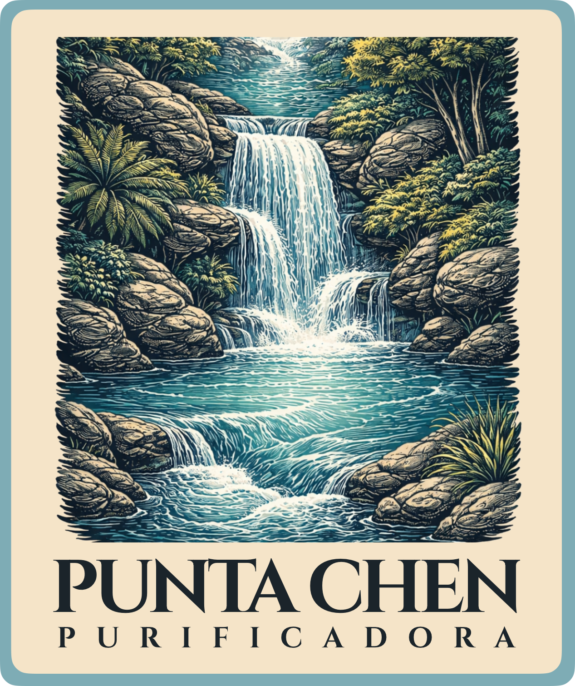
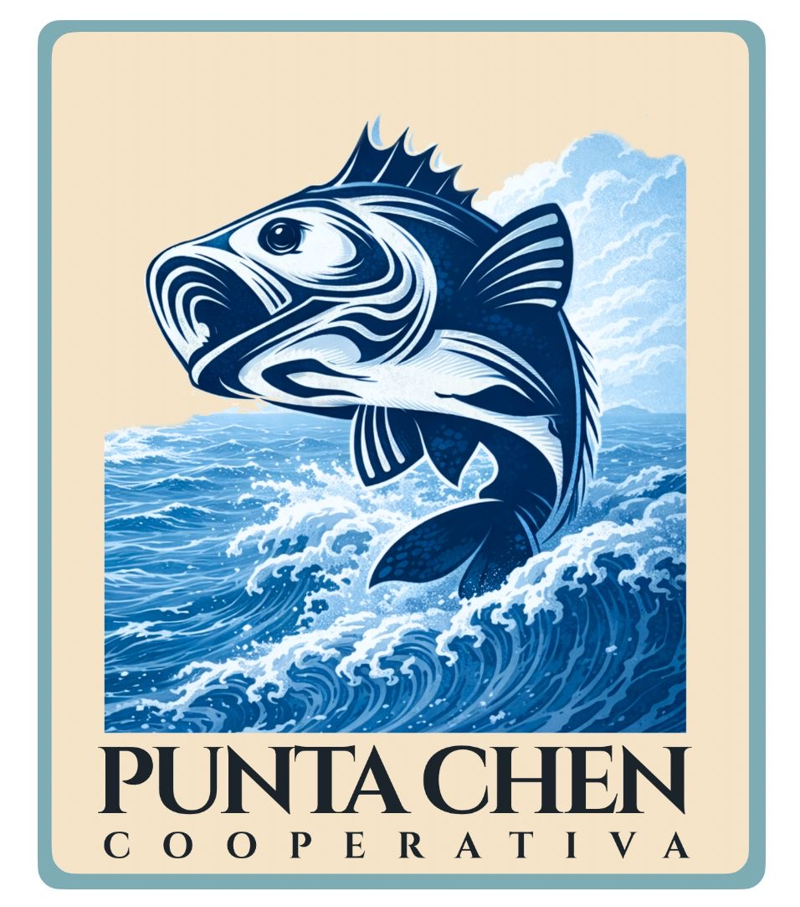

Water and ice with local control
Our purified water plant and ice production strengthen the group’s operations by supporting the cold chain and supplying businesses and communities.
EXPLORE OUR WATER PLANTGrupo Punta Chen
Quality, trust, and sustainable development in Quintana Roo.
We operate an integrated network that brings together fisheries production, ice, and purified water, connecting the wealth of the sea with real opportunities for our people.
About Us
Grupo Punta Chen was founded with a clear vision: to turn the work of the sea into opportunities for people and growth for the region.
Since 2008, we have evolved from a fishing cooperative into a group that brings together three strategic business lines: fisheries production, ice production, and purified water.
Today, we operate under a shared principle: delivering quality products and services while promoting the sustainable development of our community.
Our Business Units

Our purified water plant and ice production strengthen the group’s operations by supporting the cold chain and supplying businesses and communities.
EXPLORE OUR WATER PLANT
Our cooperative was built through the efforts of fishermen committed to their community and the conservation of marine resources.
EXPLORE THE COOPERATIVEOUR OPERATIONS
Each Grupo Punta Chen business unit is part of a coordinated process designed to ensure quality, traceability, and service for our customers.
The cooperative supplies products sourced through responsible fishing carried out by members from the region.
Products are sorted and kept within the cold chain to preserve their quality.
Our infrastructure supports daily operations and helps ensure a continuous supply.
We deliver on time to hotels, restaurants, retailers, and local customers.
READY TO WORK TOGETHER?